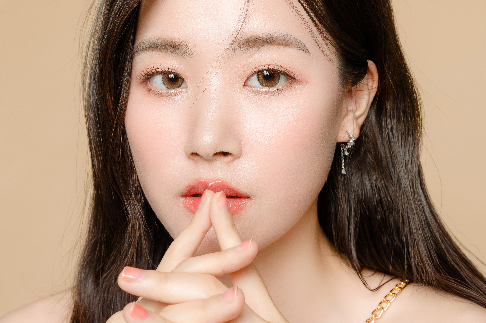
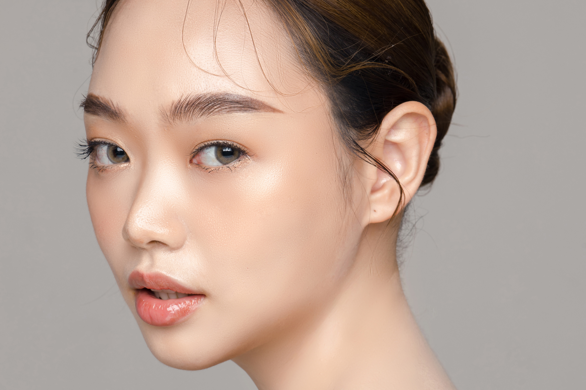
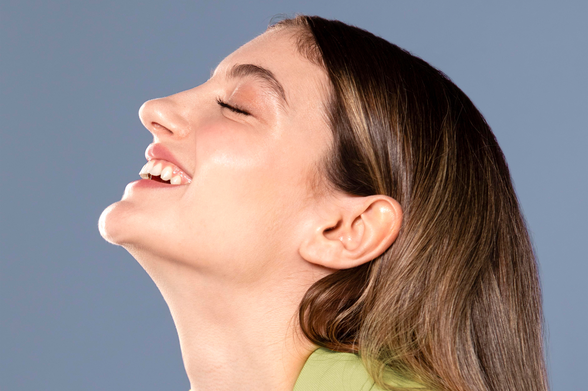

จมูกโด่ง ปลายจมูกสวยเป็นอีกหนึ่งเสน่ห์ที่สาวๆ ให้ความสำคัญเพราะนอกจากการมีสันจมูกที่โด่งสวยจะช่วยเพิ่มมิติให้ใบหน้าแล้วยังทำให้ใบหน้าโดยรวมดูดีขึ้นมามาก ในปัจจุบันมีทรงจมูกนั้นมีมากมายให้เลือก ยิ่งหากเป็นคนเล่นสื่อโซเชียลด้วยแล้วยิ่งจะเห็นว่ามักจะมีไอดอลหรือเซเลบรีวิวทรงจมูกที่ผ่านการศัลยกรรมกันมากมาย บ้างก็ทำทรงสายฝอเปลี่ยนลุคเป็นสาวหมวยอินเตอร์ หรือบ้างก็ทำจมูกทรงสาวตะวันออกเน้นความคมเข้มทรงหยดน้ำสวยๆ และที่ขาดไปไม่ได้คือจมูกทรงสาวเกาหลี เน้นความเป็นธรรมชาติสวยหวานแบบละมุน ทั้งนี้จะจมูกทรงไหนก็ขึ้นอยู่กับใจของสาวๆ และผลลัพธ์ภายนอกที่อยากได้ โดยในวันนี้เราได้นำทรงจมูกยอดนิยมของสาวไทยในปี 2023 มาให้ได้เลือกกันแบบจุใจ ถูกใจจมูกทรงไหนกดเซฟรัวๆได้เลย
ทรงจมูกแบบที่เกริ่นมาล้วนแต่มีความสวยในแบบที่แบบของใครของมัน ขึ้นอยู่กับว่าสาวๆอยากเลือกทำทรงไหนให้เข้ากับใบหน้าของตัวเอง อย่างไรก็ตามสำหรับคนที่กำลังจะทำจมูกและอยากให้ดูธรรมชาติราวกับว่าเกิดมามีจมูกแบบนี้เลย ขอแนะนำให้เลือกศัลยกรรมจมูกที่เกาหลี เพราะมั่นใจได้ว่าไม่ว่าจะเป็นทรงไหนเกาหลียืนหนึ่งเรื่องความเนียนแน่นอน
หลายคนอาจสับสนว่าหากไปทำจมูกที่เกาหลี ต้องเป็นทรงเกาหลีไหมนะ ? ที่จริงแล้วการไปทำศัลยกรรมที่เกาหลีไม่ได้หมายความว่าจะต้องเป็นจมูกทรงของประเทศนั้นๆ เสมอไป เพียงแต่ว่าเรื่องความเคยชินและความเชี่ยวชาญอาจจะถนัดในสไตล์หรือจมูกทรงนั้นๆ มากกว่าเท่านั้น เพราะศัลยแพทย์เกาหลีส่วนใหญ่มีความเชี่ยวชาญในการทำจมูกทุกทรงไม่ว่าจะทรงไหนก็สบายใจได้ว่าออกมาดีหากเลือกโรงพยาบาลที่มีชื่อเสียงและมีประสบการณ์
คำถามสำคัญคือเพราะอะไรที่ทำให้ใครๆ ต้องแนะนำศัลยกรรมจมูกที่เกาหลี ? เรารู้ดีว่าเกาหลีเป็นประเทศที่ขึ้นชื่อในเรื่องความสวยความงาม และเป็นประเทศที่ให้ความสำคัญกับภาพลักษณ์อยู่แล้ว ทั้งนี้เหตุผลหลักๆ ก็มีด้วยกัน 3 ประการด้วยกัน
อย่างแรกหากคุณเลือกไปศัลยกรรมจมูกที่เกาหลีคุณจะได้การบริการที่ทั่วถึงและครบวงจร รวมถึงได้ศัลยแพทย์ที่มีเป็นมืออาชีพ ศัลยแพทย์ที่นี่มีทักษะและประสบการณ์มากมาย โดยเฉพาะในด้านการผ่าตัดเสริมจมูก เพราะในเกาหลีการทำจมูกถือเป็นศัลยกรรมที่มีความนิยมสูงอยู่แล้ว เมื่อรวมกับการฝึกอบรมขั้นสูงด้วยจะยิ่งส่งผลให้อัตราความสำเร็จสูงและผลลัพธ์ที่น่าพึงพอใจ
ต่อมาคือมาตรฐานที่สูงและเทคนิคที่ทันสมัย ในปัจจุบันการศัลยกรรมในเกาหลีนั้นมีเทคนิคที่หลากหลายมากขึ้นและที่เป็นที่พูดถึงคือการใช้ระบบ 3D ซึ่งช่วยทำให้เห็นภาพได้มากขึ้นว่าผลลัพธ์จะออกมาเป็นอย่างไรเพื่อให้ตัดสินใจง่ายขึ้นว่าควรใช้เทคนิคแบบไหนในการทำจมูก หรือการทำจมูกด้วยเทคนิคซิลิโคนคาร์บิง (Carving Silicon) ที่มีเนื้อนุ่มโดยเฉพาะเพื่อให้มีความประณีตเหมาะกับใบหน้าคนไข้ และเทคนิคผสานระหว่างการใช้ซิลิโคนกับกระดูกอ่อนของคนไข้เพื่อให้หน้าดูเป็นธรรมชาติและดูละมุนละไมอ่อนเยาว์ เป็นต้น
การใช้เทคนิคใหม่ๆ วิธีดำเนินการ ผสานกับเทคโนโลยี เพื่อให้ได้จมูกตามความต้องการและความเหมาะสมของคนไข้ทุกคนมีผลลัพธ์ที่ดูสวยเป็นธรรมชาติเป็นปัจจัยหลักที่ทำให้การศัลยกรรมจมูกที่เกาหลีเป็นอุดมคติของใครต่อใครมาอย่างยาวนาน อย่างไรก็ตาม แนะนำว่าคุณควรเลือกและศึกษาโรงพยาบาลหรือคลินิกสำหรับทำศัลยกรรมอย่างรอบคอบก่อนเสมอ เพื่อเลี่ยงความเสี่ยงที่อาจเกิดขึ้นได้จากความไม่ได้มาตรฐาน และไม่มีคุณภาพซึ่งไม่คุ้มเสีย
สุดท้ายนี้แอบกระซิบว่าความสวยเป็นเรื่องที่รอไม่ได้ ฉะนั้นใครอยากได้จมูกทรงไหน ลุคสาวสวยแบบใด เชิญเลือกและนำแบบที่ต้องการไปปรึกษาศัลยแพทย์กันได้เลย
ทรงจมูกเกาหลี
ทรงจมูกธรรมชาติ
ทรงจมูกสโลปปลายพุ่ง

ทรงจมูกสายฝอ
